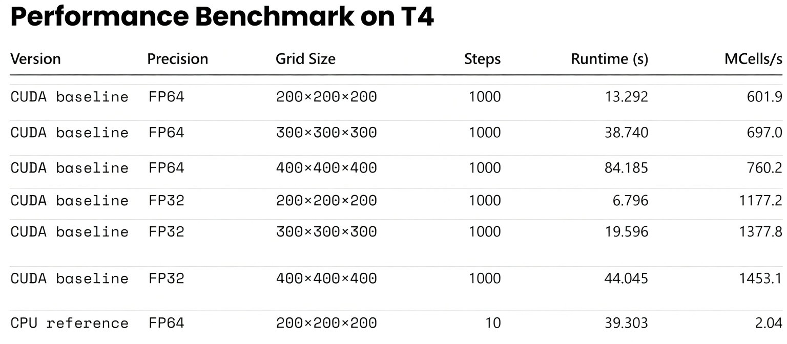

Contents
1. The Architectural Shift: CPU vs. GPU 2. Mapping Grids to CUDA Hierarchies 3. The Memory Bottleneck 4. 1D Laplace Benchmarking 5. 2D Laplace & Stencil Operations 6. Performance Analysis on Tesla T4 7. The Obsolescence of Texture Memory 8. Production-Grade Optimizations 9. References1. The Architectural Shift: CPU vs. GPU
CPUs are built to minimize latency for unpredictable workloads, dedicating vast die area to complex control logic and massive L3 caches. GPUs take the opposite approach: they maximize throughput by heavily prioritizing Arithmetic Logic Units (ALUs) over control logic.

For structured-grid algorithms—such as Finite-Difference Time-Domain (FDTD) or Jacobi iterations—this throughput-centric design is a natural fit. These solvers demand high arithmetic intensity across massive arrays with highly predictable memory access patterns. When properly implemented, a modern GPU can routinely deliver order-of-magnitude speedups over a multi-core CPU.

FDTD Simulation: Multi-threaded CPU vs. CUDA execution.
2. Mapping Grids to CUDA Hierarchies
CUDA abstractions map directly to numerical grids. Computations are launched as kernels, executed by thousands of threads. Threads are bundled into blocks, which formulate a grid. In spatial simulations, the standard practice is mapping one thread to one discrete mesh node.

Global memory indexing in 1D:
int i = blockIdx.x * blockDim.x + threadIdx.x;Extended to 2D for cross-section models or surface boundaries:
int i = blockIdx.x * blockDim.x + threadIdx.x;
int j = blockIdx.y * blockDim.y + threadIdx.y;3. The Memory Bottleneck
In computational physics, FLOPS are practically free; data movement is expensive. Real-world solver performance is almost entirely bound by memory bandwidth. Understanding the memory hierarchy is a prerequisite for writing fast kernels.

- Registers: Thread-private. Zero latency, but extremely limited. Overusing them causes "register spilling" to local memory.
- Shared Memory: Block-level, user-managed cache. Vital for algorithms needing complex intra-block data reuse.
- L1 / L2 Cache: Hardware-managed. Modern NVIDIA architectures have highly efficient L1 caches that automatically handle most regular read patterns.
- Global Memory: High capacity, but hundreds of clock cycles of latency. Kernel design must minimize transactions here.
4. 1D Laplace Benchmarking
To isolate memory access behavior from arithmetic complexity, we use the 1D discrete Laplace operator:
We evaluate four distinct implementation strategies to measure hardware response:
- Naive: Standard pointer arithmetic to global memory.
- LDG: Forcing read-only cache usage via
__ldg(). - TexObject: Utilizing the hardware texture cache.
- Shared: Explicit tiling in shared memory with halo (ghost cell) exchange.
__global__ void ker_laplace_naive(float* y, const float* x, int n) {
int i = blockIdx.x * blockDim.x + threadIdx.x;
if (i >= n) return;
// Periodic boundary conditions
int prev = (i == 0) ? n - 1 : i - 1;
int next = (i == n - 1) ? 0 : i + 1;
y[i] = x[next] - 2.0f * x[i] + x[prev];
}5. 2D Laplace & Stencil Operations
Scaling up to 2D, the five-point stencil is the backbone of diffusion solvers, electrostatics, and TM/TE mode FDTD schemes:

__global__ void ker_laplace2d_naive(float* y, const float* x, int nx, int ny) {
int i = blockIdx.x * blockDim.x + threadIdx.x;
int j = blockIdx.y * blockDim.y + threadIdx.y;
if (i >= nx || j >= ny) return;
int im = (i == 0) ? nx - 1 : i - 1;
int ip = (i == nx - 1) ? 0 : i + 1;
int jm = (j == 0) ? ny - 1 : j - 1;
int jp = (j == ny - 1) ? 0 : j + 1;
int c = j * nx + i;
y[c] = x[j * nx + ip] + x[j * nx + im] + x[jp * nx + i] + x[jm * nx + i] - 4.0f * x[c];
}6. Performance Analysis on Tesla T4
3D FDTD Performance Benchmark
Beyond lightweight stencil tests, it is also useful to show what a real 3D scientific solver can achieve after a CUDA pipeline has been implemented. In the present case, a 3D FDTD solver with dispersive material updates, real-time spectral accumulation, and Ex data output was executed on a publicly accessible NVIDIA T4 GPU.

This benchmark is not meant to replace the kernel-level discussion below. Rather, it gives readers a more concrete sense of the scale at which GPU acceleration becomes transformative for end-to-end computational electromagnetics workflows.
Executing the 2D benchmark on an NVIDIA T4 GPU (using 16×16 blocks) reveals crucial insights about modern hardware behavior.
| Grid Resolution | Naive (ms) | LDG (ms) | TexObject (ms) | Shared (ms) |
|---|---|---|---|---|
| 1024 × 1024 | 0.0398 | 0.0397 | 0.0468 | 0.0674 |
| 2048 × 2048 | 0.1432 | 0.1431 | 0.1644 | 0.2377 |
| 4096 × 4096 | 0.5662 | 0.5656 | 0.6569 | 0.9082 |
| 8192 × 8192 | 2.2476 | 2.2511 | 2.6381 | 3.6918 |
Engineering Takeaways
The execution time scales linearly with grid size, verifying a strict memory-bound state. More importantly, the hierarchy of execution speed remains rigid:
Naive ≈ LDG < TexObject < Shared
- Naive vs. LDG: Statistically identical. The T4's L1/L2 cache seamlessly handles row-major spatial locality. Explicit read-only directives offer no advantage here.
- Texture Caching: Measurably slower. For Cartesian grids, routing data through texture units introduces latency without benefit.
- The Shared Memory Trap: Shared memory is the slowest approach for this specific operator. For a lightweight 5-point stencil, the indexing overhead, block synchronization (
__syncthreads()), and ghost cell loading consume more cycles than they save in global memory transactions.
7. The Obsolescence of Texture Memory
In the Kepler and Maxwell eras, exploiting texture memory was mandatory for high-performance 2D/3D wave propagation solvers. The texture cache was explicitly designed for spatial locality, vastly outperforming the rudimentary data caches of the time.
However, as unified cache architectures evolved, standard global memory accesses (our "Naive" method) caught up. Today, texture units should be strictly reserved for their intended use cases: hardware-accelerated interpolation, boundary clamping, and unstructured image processing.
8. Production-Grade Optimizations
When hardware caches handle basic stencils efficiently, further speedups in industrial PDE solvers (e.g., 3D FDTD, Maxwell solvers) require addressing global memory bandwidth and hardware occupancy directly.
I. Enforcing Memory Coalescing
GPUs retrieve memory in 32- or 128-byte segments. If all 32 threads in a Warp access a contiguous and aligned block of memory, the transaction is "coalesced" and executed in a single cycle.
Implementation: In multiphysics simulations, using Array of Structures (AoS) (e.g., struct {float Ex, Ey, Hz;} grid[N]) breaks continuity. To achieve maximum bandwidth, data structures must be refactored into a Structure of Arrays (SoA) (e.g., independent arrays for Ex[N], Ey[N]), ensuring 100% coalesced access for every field component.
II. Kernel Fusion
Writing intermediate fields to global memory, only to read them back in the next sequential step, is a severe bottleneck. Data transfer off-chip frequently dominates the runtime of a solver.
Implementation: Combine sequential operations—such as calculating gradients, updating field values, and applying absorbing boundary conditions (like UPML/CPML)—into a single, robust kernel. Retaining intermediate values within registers eliminates off-chip memory round-trips entirely.
III. Thread Coarsening and Register Reuse
The standard "one thread per node" mapping creates significant instruction overhead in massive 3D arrays.
Implementation: Assign a single thread to compute a small cluster of nodes (e.g., a 1x4 element column). This reduces the total number of blocks launched. Crucially, shared boundary data between those nodes can be loaded once from global memory and held in zero-latency registers for reuse. This bypasses the L1 cache entirely and massively increases Instruction-Level Parallelism (ILP).
9. References & Image Attribution
- Figure 1: Hardware allocation derived from NVIDIA CUDA C++ Programming Guide.
- Figure 2: Thread hierarchy mapping, NVIDIA Developer Documentation.
- Figure 3: GPU memory architecture, Cornell Virtual Workshop.
- Figure 4: Standard numerical methods 5-point stencil representation.